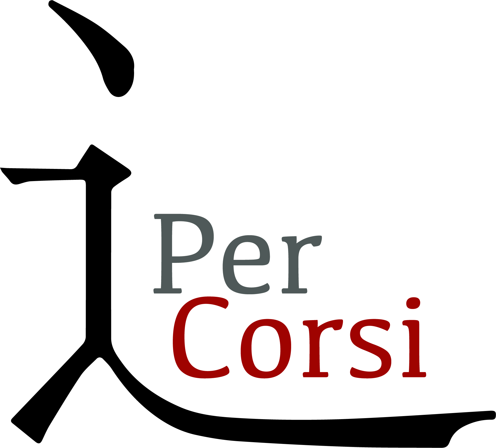
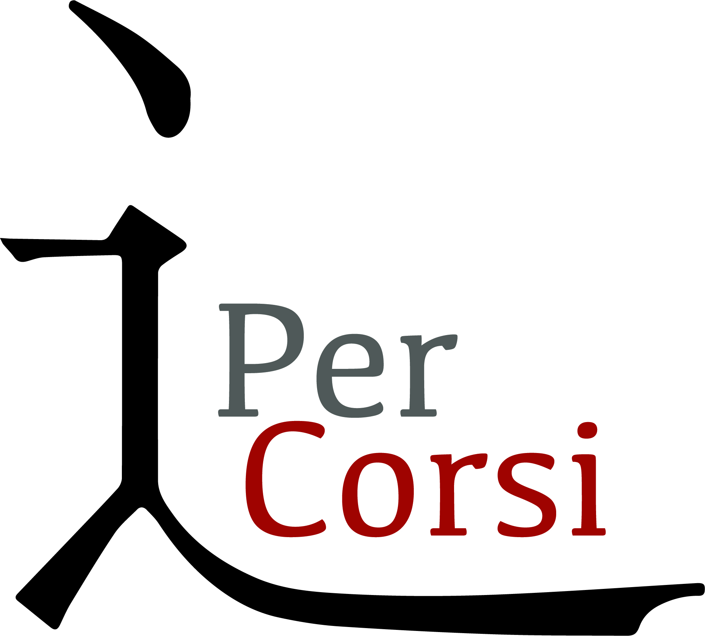
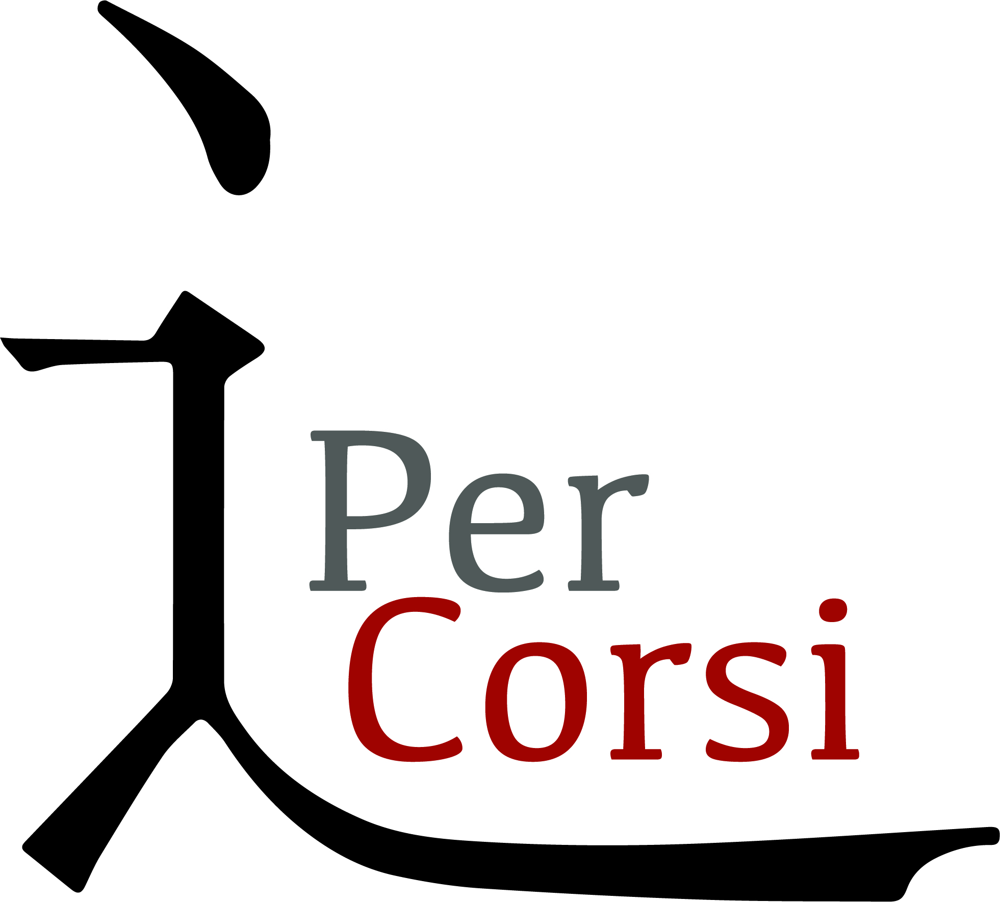

Scopri di più

Scopri di più
Chi Siamo
In questa sezione scoprirai chi siamo. Un breve racconto per conoscere meglio PerCorsi e la nostra missione.

Scopri di più
In questa sezione scoprirai chi siamo. Un breve racconto per conoscere meglio PerCorsi e la nostra missione.
PerCorsi è un’associazione culturale, fondata nel 2020 da un gruppo di docenti e ricercatori, allo scopo di promuovere ed organizzare attività culturali, formative e didattiche volte alla diffusione delle Scienze Umane e Sociali, in particolar modo ai temi legati alla cittadinanza globale, alle nuove dinamiche sociali, e alle relazioni internazionali. Uno specifico interesse è rivolto alle iniziative di carattere linguistico, sociologico, storico, antropologico, economico, e geo-politico che riguardano i rapporti tra Oriente ed Occidente.
L’associazione si propone di organizzare iniziative (seminari, corsi di formazione, laboratori, convegni, conferenze, presentazioni di libri, eventi) che hanno per oggetto i cambiamenti delle società contemporanee (migrazioni, conflitti territoriali, cittadinanza digitale, sistema politico e mediatico – nazionale e internazionale – funzionamento delle istituzioni e rapporti tra Stati), e più in generale, la cultura civica, il capitale sociale (gruppi di interesse, opinione pubblica, identità collettiva) e quello plurilinguistico e/o pluriculturale (integrazione, mediazione, storia delle culture e delle civiltà).
Negli anni ha collaborato a progetti con il Liceo “E. Amaldi” di Novi, il Liceo “C. Balbo” di Casale Monferrato, la Fondazione Acos per la Cultura, l’Associazione Cultura e Sviluppo, Fondazione Italia-Cina, Ecomuseo della Pietra da Cantoni – con ospiti del calibro di Carlo Cottarelli, Vittorio Emanuele Parsi, Francesco Boggio Ferraris, Vera Gheno, Daniel Miller, Alessandro Vanoli, Simone Pieranni, Alessandro Aresu e Michele Cortelazzo. A livello editoriale ha avuto contatti con Edizioni Epoké, Pandora Rivista, Einaudi (progetto “Lo struzzo a scuola”) e Treccani.